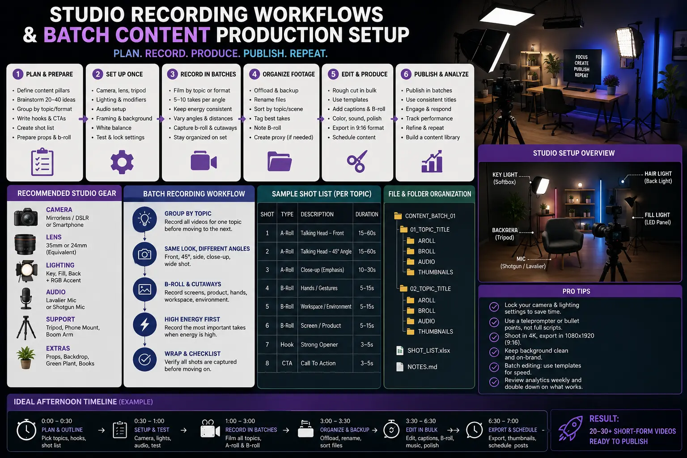
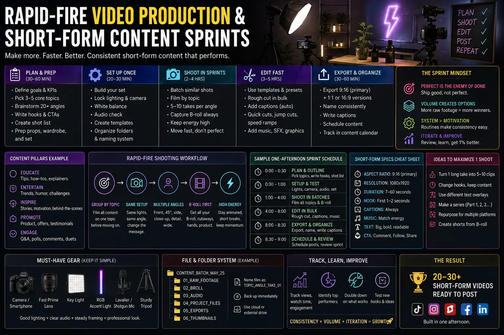

How to Shoot and Edit a Month of Short-Form Video Assets in One Afternoon
The Executive Friction of Daily Content Creation
Modern brand growth and executive thought leadership demand consistent digital visibility. Across platforms like LinkedIn, Instagram Reels, YouTube Shorts, and TikTok, algorithmic feeds heavily favor accounts that publish high-value video assets daily. However, for CEOs, founders, and corporate leaders, setting aside time every single day to set up cameras, adjust lighting, record a single 60-second video, and coordinate post-production edits creates immense operational friction. Attempting daily ad-hoc shoots leads to burnout, inconsistent brand aesthetics, missed publishing schedules, and fragmented messaging.
The key to overcoming this bottleneck is transitioning from reactive daily filming to a structured Batch Content Video Production system. By grouping pre-production, filming, and post-production into dedicated blocks, marketing teams and executives can capture 30 to 45 high-impact short-form video assets in a single 3-to-4-hour studio window. When paired with high-velocity post-production workflows, an entire month of brand authority content can be created, edited, captioned, and queued for scheduling in just one afternoon.
Implementing Short-Form Content Sprints allows organizations to decouple executive availability from daily social publishing requirements. Rather than asking key decision-makers to perform on camera multiple times a week, a single afternoon session leverages pre-scripted content architecture, standardized studio setups, and rapid slicing techniques to build an omnipresent digital identity without interrupting weekly corporate operations.
Pre-Production Strategy: Script Architecture & Modular Topic Stacking
The success of an afternoon recording sprint is determined long before the camera shutter opens. Attempting to record high volumes of content without precise scripting leads to rambling takes, forgotten key points, and exhausted talent. A high-efficiency batch content creation workflow begins with modular topic stacking and script optimization.
To maximize recording speed and retain viewer attention across digital feeds, every short-form video script should follow a strict, battle-tested structure designed for maximum engagement:
- The Visual and Verbal Hook (0–3 Seconds): State a bold proposition, pose a sharp counter-intuitive question, or highlight a costly industry mistake. Avoid generic intros like "Hi guys, welcome back." Dive straight into the core value proposition.
- The Core Value Delivery (4–45 Seconds): Deliver 3 concise actionable insights, a framework step-by-step breakdown, or a high-impact case study. Keep sentences punchy and free from corporate fluff to ensure high viewer retention.
- The Conversion Call-to-Action (46–60 Seconds): Direct the audience to download a whitepaper, comment a keyword for an automated link, or visit your website for a free strategy consultation.
By writing 15 to 20 distinct scripts mapped across four core strategic pillars (such as Thought Leadership, Educational How-Tos, Case Study Breakdown, and Industry Myth-Busting), executive talent can record sequentially without shifting mental contexts. Furthermore, by structuring topics modularly, a single 10-minute deep-dive podcast recording block can be spliced during post-production into five standalone 60-second clips, drastically expanding the volume of deliverables captured during High-volume video shooting days.
Maximized Production Efficiency
By maximizing camera team hours and pre-configuring studio gear, production teams eliminate setup downtime, allowing talent to record 20+ scripts back-to-back seamless and stress-free.
Seamless Execution
Standardized Studio Recording Workflows remove technical bottlenecks on set, ensuring consistent lighting, crystal-clear audio, and flawless teleprompter sync throughout the recording sprint.
Scalable Asset Multiplication
Leveraging rapid-fire video production techniques in editing converts raw multi-angle footage into multi-platform 9:16, 16:9, and 1:1 video assets ready for immediate distribution.
Centralized Asset Storage
Building organized corporate short-form media libraries allows marketing teams to maintain consistent publishing calendars and deploy paid ad assets without needing weekly shoots.

Studio Engineering: Zero-Downtime Recording Workflows
On the day of the shoot, the studio environment must operate with industrial precision. The primary goal of Studio Recording Workflows is to eliminate setup friction while talent is present. When a CEO or subject matter expert walks into the room, every light fixture, microphone, camera angle, and teleprompter screen must already be locked, calibrated, and color-matched.
To achieve zero-downtime execution during High-volume video shooting days, professional production crews implement specific hardware and environmental protocols:
- Dual-Camera Multi-Angle Framing: Rig a primary vertical (9:16) or horizontal (16:9) camera with a 35mm lens for medium talking-head shots, paired with a secondary tight 85mm lens offset by 30 degrees. Cutting between angle A and angle B during editing masks verbal stumbles, removes awkward pauses, and creates dynamic visual pacing without requiring retakes.
- Pre-Calibrated Continuous Lighting: Utilize high-CRI LED panel softboxes in a three-point arrangement (Key, Fill, and Rim) to establish a repeatable, high-end commercial aesthetic. Pre-lighting the studio eliminates on-set re-rigging, guaranteeing visual continuity across all 30 video assets.
- Wireless Teleprompter Systems: Mount a high-brightness teleprompter directly over the camera lens controlled wirelessly via a tablet app by the director. This allows talent to read structured scripts effortlessly while maintaining direct eye contact with the viewer lens.
- Standardized Dual-Channel Audio: Pair a wireless lavalier microphone with an overhead hypercardioid boom mic running into an optical compressor/limiter recorder. This guarantees pristine dialog clarity, eliminates room echo, and avoids audio clipping when talent speaks with varying emotional dynamics.
By establishing these strict technical parameters, production teams focus on maximizing camera team hours. Talent can cycle through 15 to 20 teleprompter scripts in less than two hours, taking quick two-minute water breaks between topic clusters while changing jacket styles or ties to provide visual variety across the final content calendar.
Post-Production Sprints: Slicing, Templates & Batch Assembly
Capturing high-volume raw video is only half the battle. The true magic of creating a month's worth of assets in one afternoon occurs during post-production. Traditional frame-by-frame manual editing is too slow for modern social demand; instead, editors employ a rapid-fire video production pipeline driven by template automation, AI transcription slicing, and batch rendering.
AI-Powered Text-Based Slicing
- Generate instant AI transcripts of raw multi-take footage to identify optimal soundbites instantly.
- Cut bad takes, filler words ("ums" and "ahs"), and pauses directly by deleting text from the transcript editor.
- Export selected text regions directly to separate sequence timelines for rapid multi-clip assembly.
- Batch tag clips by topic category, speaker, and campaign objective for instant retrieval.
Mogrt Motion & Caption Automation
- Apply pre-designed Motion Graphics Templates (Mogrts) for lower-thirds, callouts, and brand logos in one click.
- Generate auto-captions with custom brand typography, dynamic highlight colors, and animated pop-ins.
- Utilize standardized color grading LUT presets to lock in commercial skin tones across all clips instantly.
- Integrate copyright-clear royalty-free background music tracks side-chained to auto-duck below speech.
Batch Rendering & Distribution
- Queue dozens of vertical (9:16), horizontal (16:9), and square (1:1) compositions into Adobe Media Encoder simultaneously.
- Export clips using hardware-accelerated H.264/HEVC presets optimized for mobile network playback.
- Populate corporate short-form media libraries with auto-tagged files ready for social scheduler upload.
- Attach pre-formatted caption copy, hashtag bundles, and thumbnail frames to each asset folder.

Building Enterprise Value: The Corporate Short-Form Media Library
Once the afternoon recording sprint and editing pipeline conclude, organizations possess a powerful digital asset asset base: a central repository of corporate short-form media libraries. Rather than storing video files randomly across local hard drives or scattered Google Drive folders, leading enterprises maintain cloud-based media libraries structured by topic tags, campaign funnels, and performance hooks.
Having an organized, tagged media library delivers distinct strategic advantages for corporate marketing teams:
- Predictable Publishing Consistency: Social media managers can queue up 30 days of Instagram Reels, YouTube Shorts, and LinkedIn video posts in advance, eliminating last-minute panics over empty posting schedules.
- Agile Trend Response & Campaign Ads: When an industry news event or market opportunity occurs, marketing teams can pull pre-approved executive commentary clips from the library and run targeted paid ad campaigns within hours.
- Cross-Departmental Asset Utility: Beyond social feeds, short-form clips can be embedded into sales pitch decks, monthly email newsletters, investor landing pages, and internal onboarding portals to reinforce corporate brand authority.
Adopting a regular quarterly schedule for Short-Form Content Sprints ensures your organization continuously refreshes its digital repository, building an ever-growing moat of executive video assets that drive qualified inbound leads and establish long-term market leadership.
Partnering with The PhD Ads in Madurai
Executing a seamless batch content creation workflow requires technical expertise, specialized camera gear, acoustic studio spaces, and dedicated editing teams. For brands and enterprise leaders based in Madurai and across Tamil Nadu, The PhD Ads provides end-to-end production support tailored to high-volume content strategies.
Our team manages every aspect of your shoot day — from script architecture, studio lighting design, and dual-camera teleprompter setups to rapid post-production editing, motion graphics, and media library curation. We take care of the technical heavy lifting so you can focus on delivering your core message and growing your business.
Key Topics
Ready to Capture a Month of Short-Form Video Assets in One Afternoon?
At The PhD Ads in Madurai, we design, record, edit, and curate full-month short-form video libraries for ambitious brands and business leaders — giving your company continuous social media omnipresence from a single afternoon session.
Email: team@e2o.in